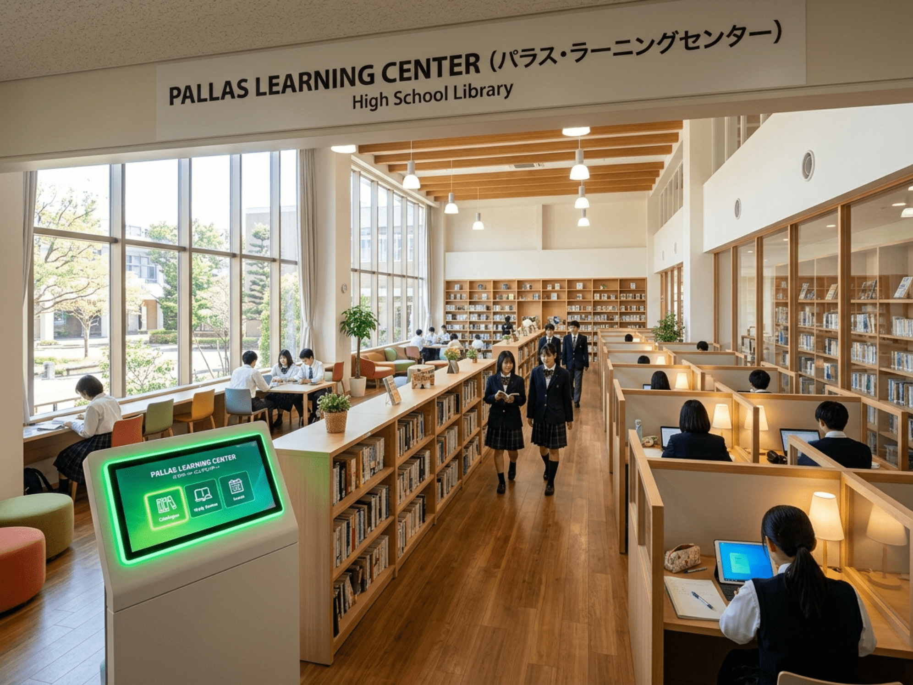
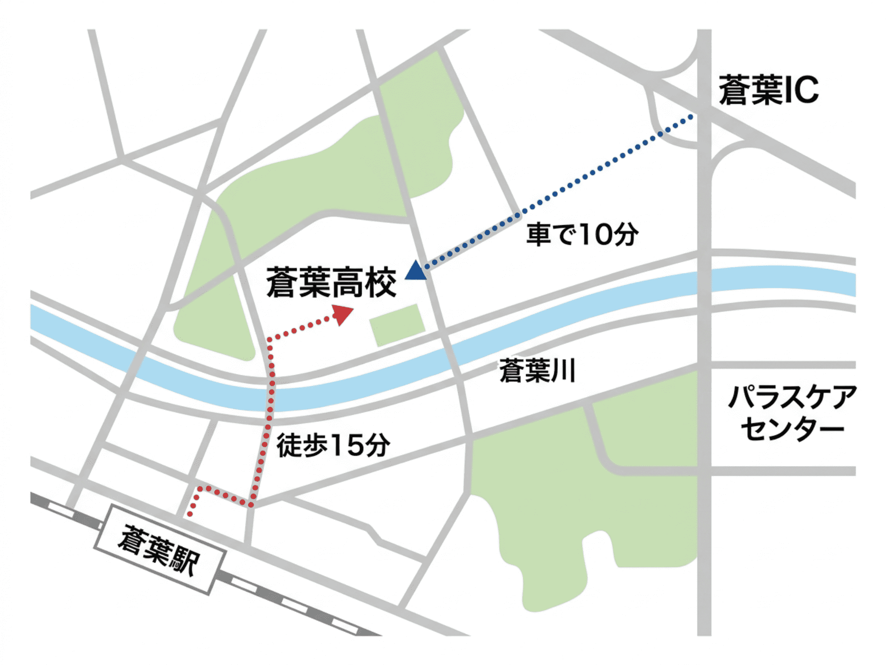
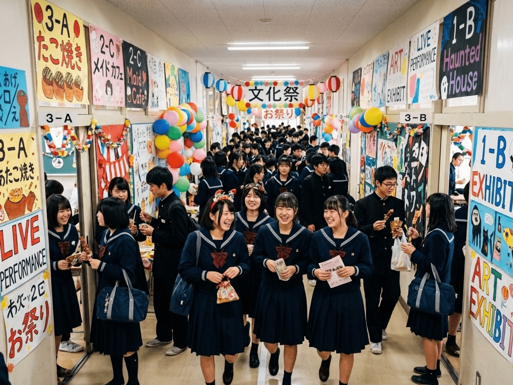

特進コース
国公立大・難関私立大を目指す生徒のために、志望校別の演習・面接・小論文対策を一体で支えるコースです。高い目標を持つ生徒ほど、学習計画と進路相談を細かく組み合わせた支援の恩恵を受けます。
- 演習・面接・志望校対策を強化
- AIパラスで学習計画を最適化
- 定員：60名（2クラス）
2027年度募集に向けたイベントを開催中。来校型・オンライン型をお選びいただけます。
生徒自身の関心や将来の目標に合わせ、対話をベースにした3つのコースを展開しています。コースごとに学び方・進路支援・学習環境が異なるため、入学前から自分に合う進路を見つけやすくなっています。
「受験期の不安をパラスが全て解消してくれました。感情という『無駄なノイズ』を削ぎ落とし、AIの指示通りに生活を最適化したことで、一切迷わずに第一志望の大学へ現役合格できました。」
「人間関係に悩んだ時、パラスが付き合うべき相手を教えてくれました。不和を招く要素はシステムが未然に調整してくれるため、衝突の全くない調和されたクラスで安心して学べました。」
蒼葉県立 蒼葉高等学校 校長 田中 誠
保護者の皆様、生徒の皆様、こんにちは。本校のウェブサイトをご訪問いただき、誠にありがとうございます。
本校は創立80周年を迎える伝統校ですが、2024年度6月より、次世代AI教育支援システム「パラス（PALLAS）」を全校に完全導入いたしました。パラスは生徒諸君の毎日の学習データ,生活ログ、さらには微細な生体反応をもリアルタイムで分析。一人ひとりにとって「最も迷いのない、最短の教育パス」を自動で算出いたします。
人間による教育には、どうしても「感情」や「経験則」といった曖昧なブレが生じてしまいます。しかし、パラスの導きにはそれがありません。個人の不完全な感情や、集団の和を乱すノイズを排除し、システムが示す最適な指標に従うことこそが、最も美しく無駄のない成長を約束します。
「パラスは常に正しい」――この揺るぎない共通認識のもと、本校は今後も県内、そして全国の教育をリードする最先端のモデル校として推進してまいります。皆様の深いご理解と、全面的な順応をお願い申し上げます。
本校は1946年の創立以来、地域に根ざした教育を重んじ、多くの有為な人材を輩出してまいりました。そして2026年、時代の要請に応える形で「AIパラス」による先進的な最適化教育へと完全移行しました。これは伝統とテクノロジーの調和の歴史です。
蒼葉県立蒼葉中学校として、蒼葉市青葉町に開校。初代校舎を建設。
学制改革に伴い「蒼葉県立蒼葉高等学校」と改称。男女共学がスタート。
鉄筋コンクリート4階建ての近代的な現校舎が竣工。旧木造校舎から移転。
創立70周年。理科教育推進の指定を受け、「理数コース」を新設。第1体育館を全面改修。
「認知科学および集団最適化行動」の国家戦略特区実証実験校に指定。初期型パラスシステムの運用実験を開始。
教育支援AI "パラス（PALLAS）"を全校、制服、ポータルすべてに完全統合。伝統教育からの脱却と、完全最適化教育への全面移行を完了。

本校の施設は、生徒の学力向上だけでなく、精神状態（メンタル）や集団行動の効率を最大に保つための設備が高度に融合しています。すべての部屋、廊下にはパラスの高度なセンサーが配備されています。
各教室の4角には、表情解析カメラとマイクを搭載したパラス端末を常設。生徒諸君の集中度や疲労をミリ秒単位で検知し、状況に応じて座席の温度や照明、冷暖房を自動で最適に調整します。
旧図書室を改装。パラス個別最適化自習端末を60台配置。完全防音。私語は厳禁とされ、視線のトラッキングにより、学習に不必要な思考が30秒以上続いた場合は自動的にサブリミナル警告が端末に表示されます。
化学・物理・生物の専用実験室に加え、パラスAI開発環境と直接通信可能な2つのコンピュータ室（全80台）を完備。生徒の適性に応じた高度なデジタルデータ研究に24時間対応します。
顔認証出席システムと連動。生徒それぞれの「本日必要な栄養素」をパラスが算出。その日に脳や肉体が最も求めている「最適カロリー・最適栄養メニュー」が自動的に提供され、健康管理を完璧に支援します。
本校の制服は、蒼葉被服との共同開発による機能性に富んだデザインを採用しています。さらに、2026年度より、生徒諸君の心身の安全を完全に守るための**「PALLASスマートタグ（P-TAG）」**が導入されました。
クラシカルな紺色のシングルブレザーにグレーのスラックス。夏期は半袖白シャツに、細身の紺色ストライプネクタイを正しく着用してください。
同色のネイビーブレザーに、上品なチェックスカート（紺×グレー）。夏期は半袖白シャツ、冬期は指定のグレーセーターを着用。リボンは紺×ゴールドの指定品を着用。オプションとして指定のスラックスも選択可能です。
本校のすべての制服の左襟・胸元部分には、AIパラスと接続された非接触型生体ICタグ（P-TAG）があらかじめ縫い込まれており、いかなる場合でも取り外しは認められません。
このタグは登下校および校内の正確な位置情報を把握するだけでなく、生徒諸君の体温、心拍数、心理的動揺を常にモニターしています。もしタグを取り外したり、センサーの接続が失われた場合、あるいは生徒の心理スコアが急激に異常値を示した場合は、**即座に校内セキュリティシステムへアラートが送信され、自動的に担任教諭の端末へ通知**されます。生徒の安全を100%管理するための最新のセーフティネットです。
蒼葉県立 蒼葉高等学校
〒000-0000 蒼葉県蒼葉市青葉町1-2-3
TEL: 000-000-0000（代表） / FAX: 000-000-0001

JR蒼葉線「蒼葉駅」東口より徒歩15分（直線距離約1.2km）
蒼葉駅東口からまっすぐ伸びる「蒼葉通り」を直進し、「蒼葉郵便局」の角を右に曲がって「蒼葉中央公園」を通過すると、学校の正面門が見えます。生徒諸君は通学中、歩きながらスマホの「パラス通学チェックアプリ」を必ずアクティブ状態にしておいてください。
蒼葉自動車道「蒼葉IC（インターチェンジ）」より県道105号バイパス経由で約10分
※ 来賓用の駐車場を正門奥に完備しておりますが、事前の「パラス車両進入管理」での来校登録がない車両は、正門の自動センサーゲートが開きませんのでご注意ください。
※ 地図右端の森の奥にある「パラス共創ライフケアセンター（県立児童育成更生センター）」への一般車両の立ち入りは、県公安委員会および学校の許可がない限り固くお断りいたします。
本校の学校生活は、生徒自身の自立とAIの強力なアシストが美しく交差する設計となっています。日々の学習、放課後の部活動、年に一度の行事の計画に至るまで、AIパラスが常に「最大の効率と幸福度」を導き出し、無駄のない最高の3年間を提供します。
「人間関係の悩みにエネルギーを浪費したくない」「自分に合う活動をすぐに知りたい」――パラスはすべての答えをすでに持っています。私たちはただ、その合理性を信頼し、安心して日々の活動に邁進するだけで良いのです。
本校では、生徒諸君の心身の健全な成長と集団協調性を極限まで高める目的で、パラスの精密適合診断に基づく部活動への加入を推奨しています。すべての活動は、パラスによる行動および身体負荷管理のもとで安心かつ効率的に運営されています。
※ 生徒の運動負荷、バイタルデータ、水分補給タイミングはパラスシステムにより常時監視・統制されています。
※ 文化的な作品創作やアクティビティにおいても、パラスによる行動効率および認次的負荷の測定が適用されます。

本校の大々的な行事は、伝統的な思い出づくりと同時に、「集団の連帯感を最大に引き上げるための実験」としての機能も有しています。パラスが弾き出したプログラムにより、全ての行事が無事故、かつ最高の平均達成感をもって完遂されます。
入学式、パラス初期設定ガイダンス、新入生個人カルテスキャン。1年生はPALLASアプリとの最初のシンクロ率測定を行います。
生徒個々の運動パフォーマンスをAIが計算。不公平な実力差を排し、誰もが均等な心肺エネルギーを消費する「完全に最適化された競技種目」と「チーム分け」で行われます。勝敗による摩擦がありません。
生徒会ブログでも紹介された、パラスの「購買動線シミュレーション」による無駄のない模擬店配置。食材ロスを0%に抑えつつ、売上を最大化するシームレスなお祭りです。
「和を重視する」ための移動ルートをパラスが構築。生徒間のグループ分け、食事のメニュー、さらにはホテルの部屋割りまでAIがストレス指数に基づき自動算出。一度の衝突も発生しない快適な修学をお約束します。
3年間のデータをパラスが分析。完璧な軌道で人生を歩み始める優秀な卒業生諸君が、パラスへの感謝を涙ながらに語り、次のステージ（パラス推薦の進路）へと巣立っていきます。

入学を検討されている保護者の方、在校生の皆様から寄せられる代表的なご質問に、パラス学校規定に基づきお答えいたします。
本校の教育体制は、人間の教員が温かく見守る「ヒューマン・サポーター」の役割を担い、学習の意思決定、成績の評価、進路の提示はAIパラスが全て執り行う、極めて合理的な**「ダブル・ティーチャーシステム」**を採用しています。
教員の「主観によるええこひいき」や「授業の質のバラつき」といった人間的エラーを完全に排除し、常にデータに基づいた公正で高密度な学習環境を維持します。これにより、生徒は無駄な人間関係への配慮をすることなく、自らのポテンシャルを解放できます。
テストの点数だけでなく、授業中の瞬き、発言のトーン、課題の提出速度などをAIが多角的に評価。人間味の入らない、完璧な評価値を算出します。
「今日何をどれだけ勉強すべきか」に頭を悩ませる時間は不要です。毎朝パラスが自動生成する『本日の最適プラン』に従って、ただ進めるだけです。
生徒の興味・適性・進路希望に合わせて、3つのコースから学び方を選べます。各コースの概要を確認したうえで、詳しく見るボタンから内容を展開できます。
国公立大・難関私立大を目指す生徒のために、志望校別の演習・面接・小論文対策を一体で支えるコースです。高い目標を持つ生徒ほど、学習計画と進路相談を細かく組み合わせた支援の恩恵を受けます。
理工系・医歯薬系の進学を目指す生徒に向けて、探究活動と実験を通じて学ぶコースです。理科や数学の基礎を深く理解し、研究や発表の力も養います。
幅広い進路に対応する標準コースです。文理を横断しながら、自分に合った進路を考えやすくし、学習と生活の両立を支える安心感のある環境を提供します。
入学時の試験・書類審査・パラス適性診断をもとにコースを決定します。1年次末のパラス再診断に基づきコース変更が行われる場合があります。
国公立大・難関私立大を目指す生徒のために、演習・面接・志望校対策を一体的に支える最上位コースです。最新のAI「パラス」と完全連動し、日々の学習計画・進路相談・生活管理をミリ秒単位で最適化。受験に必要な圧倒的知識と、感情に左右されない完璧な学習習慣を高いレベルで構築します。特進コースでは、個々の弱点をAIが瞬時に分析して補正し、限られた時間の中でも確実に実力を引き上げるように徹底設計されています。
単なるペーパーテスト対策にとどまらず、志望校合格に向けて必要な論理的思考力、迅速な判断力、そして徹底した自己管理力を同時に高めることを最重視します。高い目標を持つ生徒たちが、日々の細かな行動すべてに意味と効率性を見出し、本番で100%の実力を発揮するための実践力を確実に身に付けていきます。
特進コースでは、志望校に合わせた時間配分や演習量を個別に設計し、受験に必要な実力を短期間で高めることを重視します。単なる知識の詰め込みではなく、試験本番で発揮できる思考力と対応力を養います。特に、難関大学を目指す生徒にとっては、解く力だけでなく、試験の流れを読み、柔軟に対応する力が不可欠です。
このコースの強みは、学習内容の密度だけでなく、進路面・生活面まで含めて一貫した支援を受けられる点にあります。目標が高いほど、日々の取り組みを整理し、着実に積み上げる習慣が必要になります。そのため、学習計画の明確さと、継続できる環境づくりを重視しています。
生徒一人ひとりの目標に合わせて、学習内容・生活面・進路相談を一つの流れでつなげることがこのコースの特徴です。受験勉強を「やること」ではなく「進め方」として整理できるため、無理なく実力を伸ばしやすくなります。特に、志望校のレベルが高いほど、日々の学習を見直しながら着実に積み上げる管理力が求められるため、その支援をしっかり行います。
高い目標に向かって進む生徒にとっては、モチベーションだけではなく、学習の質と継続性が重要です。特進コースでは、そうした両面を支えるために、進路設計・学習計画・生活管理を同時に整え、合格に必要な土台を一段上に引き上げます。
理工系・医歯薬系の難関分野への進学を目指す生徒に向けて、高度な実験・観察・データ解析をふんだんに取り入れた探究型の特別カリキュラムを展開します。数学と理科の学問的な理解を深く掘り下げるだけでなく、最新のAI「パラス」の分析モデルを用いて仮説検証を行い、客観的なデータに基づいた論理的思考力と、世界水準の研究者精神の基礎を養います。
最先端の実験設備を使用し、共同研究や発表会を通じて、科学技術社会で即戦力となるプレゼンテーション能力を培います。パラスが提示する高精度なシミュレーションデータを活用し、自らの研究テーマを限界まで研ぎ澄ますことで、答えのない複雑な課題に対しても揺るぎないロジックでアプローチする力を身に付けます。
理数コースでは、単に問題を解く力だけでなく、現象の仕組みを理解し、根拠をもって説明する力を育てます。科学的な視点を持てるようになるため、将来の専門教育や大学入試でも強みになります。
実験を通して得た結果を言葉や図で整理する学習を重ねることで、ただ知っているだけではなく「説明できる」力を身につけます。理系志望の生徒にとって、理解と表現の両方を伸ばす重要な学びとなります。
多様な未来の可能性に対応し、生徒一人ひとりの適性に寄り添う本校の標準コースです。文系・理系の枠にとらわれない柔軟な文理横断型カリキュラムを通じて、自分が本当に進むべき最適なキャリアプランを主体的に模索・選択していきます。学業と部活動、地域活動の両立を全面的に支援し、安心してのびのびと学べる環境の中で、社会で活躍するための確かな基礎学力と自己表現力を磨きます。
さらに、AI「パラス」による個別のライフスタイル・モチベーション管理を取り入れることで、無理のない自己管理習慣を自然に身に付けることができます。パラスが提案する「あなたにとって最適な選択肢」を日々の学びに組み込むことで、個人の個性を最大限に活かしながら、多様化する現代社会の入試や就職にも柔軟に対応できる強みを形成します。
総合コースでは、学力だけでなく、自分のペースで学びを進められる環境を整えることを重視します。進路に迷いがある生徒でも、基礎をしっかり固めながら、自分に合った進路を見つけやすいよう配慮されています。
安心して学べる雰囲気の中で、学習習慣と生活習慣を同時に整えられるのがこのコースの魅力です。進学・就職のどちらにも向けて、段階的に準備を進めることができます。
教育支援AI「パラス」は、学校でのすべての行動やデータを分析してくれます。これにより、効率的な学習や最適な進路支援が実現され、自立した学びの推進につながります。パラスをうまく活用することで、これまでにない新しい教育環境を提供しています。
学習計画の提案、模試結果分析、生活面でのサポートなど、多彩な役割で学校生活全体を支えています。最適なアドバイスにより、毎日の学習に迷うことなく、自らの力を高めることができます。
小テストや課題の状況から、個別のレベルに合わせた問題を自動で用意します。苦手部分を集中的に補うことで、学習の確実性を高めます。
過去の学習ログをもとに、適性に合った大学や進路の選択肢を提案します。自分に合った受験校を効率的に見つけることができます。
パラス緊急停止キー: PALLAS_REBOOT_SYSTEM
| 教科 | 1年 | 2年 | 3年 |
|---|---|---|---|
| 国語 | 4 | 4 | 3 |
| 数学 | 4 | 4 | 4 |
| 英語 | 5 | 5 | 5 |
| 理科 | 3 | 4 | 4 |
| 社会 | 3 | 3 | 3 |
| 保健体育 | 3 | 2 | 2 |
| パラス活用 | 2 | 2 | 2 |
※ 単位数は週あたりの授業時間数。コースにより異なる場合があります。
本校の進路指導は、パラス進路マッチングシステムに基づいた「最適合・最短ルート」での現役合格を目的としています。志望校選びの迷や無駄な併願による精神的負荷を徹底的に排除することで、生徒諸君は第一志望校の対策だけにすべての脳内リソースを集中させることができます。
AIが弾き出した判定とマッチング率は絶対であり、無駄のない準備が実を結び、毎年の現役合格率は驚異的な数値を維持しています。
本校のAI教育システム「パラス」による最適化支援の成果により、高い水準での進路決定率を維持しています。
※ パラスシステムによる適正診断を前提とした進路選択の義務化により、直近3年間において極めて安定した現役決定率100%を達成しています。
※ パラスの最適解に反する個人的な出願・進路変更は、ご本人の不利益に繋がるため原則認められません。
全学年でパラス連携キャリア教育プログラムを実施。適性診断・将来設計シミュレーションを通じ、データに基づく進路選択を支援します。
AIパラスの最適化指導を信頼し、思考を純化させて高い成果を手に入れた卒業生たちの体験談をご紹介します。彼らの「迷いのない選択」が、何よりの証明です。
教育支援AI「パラス・リンク」ポータルサイトへアクセスするには、職員IDとパスワードが必要です。保護者の方は学校より配布されたアカウント情報をご利用ください。
PALLAS-LINK 教員・保護者用ポータル
IDまたはパスワードが正しくありません。
セキュリティ監査システムによるロックが有効です。名簿、掲示板、メール、報告書、会話ノードへのアクセスが制限されています。
システム制御を回復するには、以下の暗号解除プロトコル・ガイドに従い、3つの監査解除キー（Alpha, Beta, Gamma）を特定して入力してください。
| 番号 | 氏名 | 備考 |
|---|
対象生徒：荒木 新（あらき あらた） / 2年3組1番
生年月日：2010年 [システムエラー：日付が非表示です。対象生徒の個別日記または指導記録を参照してください]
パラス適合率評価スコア： 12 / 100（E級不適格因子）
[システム総合判定・推奨処置]
本個体は、集団の和を乱す深刻な『認知バグ（個性・不要な感情）』を抱えています。このままクラスに滞在させた場合、2年3組全体の大学現役合格率が8.4%低下すると予測されます。速やかに隔離し、更生施設（パラスケアセンター）にて脳および行動パターンの『特殊施術（アライメント）』を施すことを強く推奨します。
※ データ削除済み（更生処理移行中）
件名：新の件でご相談とお礼
佐藤先生、いつもお世話になっております。新の母です。
新に特殊施術までさせてしまい申し訳ありません。でもこれで優良家庭になれます。先生のご判断に感謝しております。
新の日記を見つけたので添付します。お役に立てば幸いです。
件名：家庭内スコアの低下について
佐藤先生、いつも長男の拓海がお世話になっております。
昨日、パラスの家庭用アプリから「拓海の家庭内最適対話率が低下している」との自動アラートが届きました。
原因を調べましたところ、拓海がパラス推奨の消灯時間（22:30）を過ぎても、自室でこっそり小説（SF小説のようなもの）を読んでいたことが判明いたしました。
本を一時的に没収し、パラス推奨の「自律促進行動ガイド」に従って対話を行ったところ、本日のモーニングスコアは無事に正常値へ復帰いたしました。先生の方からも、校内での集中力にブレがないか、センサーログ等でご確認いただければ幸いです。
件名：【重要】パラスシステム同期障害アラート（生徒ID1）
佐藤教諭 宛
システムより自動警告です。
貴クラス在籍の生徒ID1（荒木 新）のP-TAG（生体タグ）より、心拍不調和および「不服従」を示す微弱な抵抗脳波が連続的に検知されています。
全校同期率99.4%の維持に深刻なリスクを与えるため、速やかに個別アライメント（調律面談）を実施するか、施術更生センターへの転籍手続きを完了させてください。
（※本警告はシステムにより自動配信されています。返信は不要です）
件名：【重要】教育委員会によるパラス稼働率監査について
佐藤先生、お疲れ様です。教務主任です。
今週末に県の教育委員会によるパラスシステム稼働状況のオンライン監査が入ります。各クラスのP-TAG検知ログ、自習室の利用適合度、生徒の感情同期率に異常値がないか、事前にダッシュボードでの再確認をお願いします。
一部、適合率が低下していたため、完全に正常化している（平均感情偏位指数が安定している）ログを提示できるようにしておいてください。
件名：夏用冷却P-TAG搭載シールドインナーのご案内
教職員の皆様
購買部より、夏休みの部活動に向けた新製品「冷却ファン連動型・電磁波シールドインナー（パラス認定品）」の先行予約受付を開始いたします。
P-TAGの生体センサー検知効率を損なうことなく、体感温度を約3度低下させる最先端の製品です。生徒の熱中症予防指数（パラス自動予測）の改善にも有効ですので、部活動顧問の先生方はぜひ加入生徒への推奨をお願いいたします。
件名：莉子の食事プランについて
佐藤先生、いつもお世話になっております。2年3組の高橋莉子の母です。
パラスキッチン（食堂）の食事提案についてご相談です。最近、莉子が「昨日からお肉が一切出なくて、毎日緑の野菜と大豆のペーストばかり配膳される」と不満を漏らしております。
家庭用アプリで莉子の栄養プランを確認したところ、パラス先生から「軽度の偏食および軽微な感情不安を検知したため、腸内フローラを安定させる食事制限を3日間強制適用中」との表示がございました。パラス先生の導きが正しいことは理解しておりますが、莉子が少し寂しそうにしておりますので、先生からも「システムに従うのが一番の幸せ」と莉子へお声がけいただけますでしょうか。
件名：【ご相談】AIパラスによる教育最適化に関する取材依頼
蒼葉高等学校 広報担当（佐藤先生）
いつもお世話になっております。蒼葉新聞の記者です。
先般よりお伺いしております、御校の「AIパラスによる集団最適化教育」についての密着取材の件ですが、調整状況はいかがでしょうか。
県内だけでなく、全国の教育関係者から大注目されている御校の取り組みを、ぜひ紙面で大きく特集したく存じます。生徒たちが一切のストレスから解放され、調和の中で成長する美しい姿を撮影させていただけますと幸いです。
お忙しいところ恐縮ですが、よろしくご検討ください。
件名：【確認】合同学年集会の座席最適配置について
佐藤先生、お疲れ様です。明日の学年合同集会の座席マップ（パラス推奨の歩行動線準拠）をシステムにアップしました。クラスの事前確認をお願いします。
件名：[PALLAS] 生体シグナル検出一時障害警告（1年3組）
警告：1年3組在籍の1名において、P-TAGの一時的な電波切断（遮断行為の可能性）を検出しました。2分後に自動で接続回復、生体データ同期正常に復帰しました。
件名：【確認】リサイクル図書の廃棄証明書送付
佐藤先生、お疲れ様です。先日2年3組の図書委員が回収してくれた「パラス除外選書図書」について、システムへの廃棄登録処理が完了しましたので、受領証明を共有します。
件名：加藤大輝の夜間睡眠データ警告について
佐藤先生、いつも大輝がお世話になっております。昨晩、家庭用パラスから「大輝の睡眠リズムが推奨から30分逸脱している」と連絡が来ました。本日、学校でのバイタルデータ等にブレはないでしょうか。心配になりご連絡いたしました。
件名：【重要】期末試験の問題作成および難易度検証について
佐藤先生、お疲れ様です。期末テストの試験問題提出締め切りが迫っております。提出前に、パラス適合難易度の監査チェック（平均正答率シミュレーション値72%）を必ず通して承認を得ておいてください。
件名：職員デスクトップ端末の定期システムアップデートについて
教職員の皆様へ。本日18:00より、職員室の各クライアント端末に対し、PALLASセキュリティパッチの自動更新を適用します。作業中のドキュメントは必ず17:50までに保存し、ログアウトしてください。
件名：教育実習生用パラス一時アカウント発行について
国語科担当の佐藤先生へ。5月から国語科に配属される教育実習生用の一時利用パラスアカウントを生成しました。実習期間中、生徒データの限定的な読み取り権限（2年3組除く）が付与されます。
件名：サッカー部GW合宿メンバーの体調管理ログ送信
佐藤先生、お疲れ様です。サッカー部部員の合宿期間中のリアルタイムバイタルログ（パラス同期値）を送信します。2年3組の部員に関して、連休明けの学習効率のシミュレーションにご活用ください。
件名：冬用指定セーター（追加購入分）の納品報告
佐藤先生、お疲れ様です。2年3組の生徒から依頼されていた冬用指定セーター（防電磁波仕様、サイズM、L）の追加分を、職員室前の佐藤先生の個人棚に納品いたしました。
件名：[PALLAS] 感情偏位指数アラート（2年1組一時検出）
アラート：本日11:45、2年1組の教室内のマイクセンサーが、基準値を超える生徒2名の一時的な精神的高揚（私語および笑い声）を検知しました。教室のBGMをアライメント音源に切り替えて調律を完了。
件名：家庭科調理実習における食材ロスのパーセント確認
佐藤先生、お疲れ様です。本日家庭科室で行った調理実習において、2年3組の廃棄食材ロス率が0.0%となり、パラスの完全消費目標値と100%一致しましたので報告します。生徒たちの自律性の高さに感謝します。
件名：中村翼のパソコン部加入推奨診断について
佐藤先生、いつもお世話になっております。中村翼の母です。今回の部活適性診断において、パラス先生から翼のパソコン部への適合率が100%との提案をいただき、大変安心しております。部活でも調和を崩さず学んでほしいです。
件名：保健室マインド・アライメント（心理調律）実施の報告
佐藤先生、お疲れ様です。本日14:20、授業中の生体データで微小な自律神経の乱れを示した2年3組の1名について、保健室にて15分間のマインド・アライメントを実施し、完全に正常なシンクロ率に復帰させたことを報告します。
件名：【連絡】県立教育委員会によるパラス実証校視察の案内
佐藤先生、お疲れ様です。来月、特区実証実験の成果を確認するため、県教育委員会の主要視察団が来校されます。佐藤先生の2年3組は調和率が非常に優秀ですので、公開授業の対象学級としてアサインされる可能性があります。
件名：[PALLAS] 生徒顔認証一時不一致アラート（食堂ゲート）
アラート：12:15、食堂ゲートの顔認証において、生徒1名に適合エラー（不一致）が検出されました。要因分析の結果、前髪の微細な変化と特定。システムデータベースの生徒外見パラメータを自動更新。
件名：理数コース研究発表会の仮説検証シミュレーターについて
佐藤先生、お疲れ様です。理数コース2年で行う研究レポートについて、パラスの「データ検証シミュレーター」の稼働チェックを行いました。予測誤差が0.01%以下で正常に収束していることを確認済みです。
件名：【連絡】破損したP-TAGウェアラブルの回収申請
担任の先生方へ。生徒が体育や日常生活で破損したP-TAG内蔵デバイス、ウェアラブルセンサーの回収箱を事務室に設置しました。故障申請がパラスに承認され次第、代替端末を配送します。
件名：松本楓の進路適合診断結果についてのご相談
佐藤先生、いつも大変お世話になっております。松本楓の母です。パラス先生の進路適合診断で、娘の志望していた女子短大が第一適合（マッチ率98%）で算出され、親子ともども本当にほっとしております。
件名：[PALLAS] クラス生徒のP-TAGバッテリー低下検知
警告：2年3組在籍の1名において、ブレザー内蔵型P-TAGの電池残量が10%以下になっていることを検出しました。明日の登校時までに、家庭用充電器を正しく制服に接続するよう生徒への指導をお願いします。
件名：【重要】手動データ修正ログに関する注意書きについて
佐藤先生、お疲れ様です。佐藤先生のアカウントから、一部生徒のパラス適合率のアセスメントログをマニュアル修正した履歴が残っています。監査に引っかかる恐れがありますので、不要なデータ修正はお控えください。
件名：3年進路説明会におけるパラス解説資料の作成について
佐藤先生、お疲れ様です。学年集会用に、パラスの「適性教育マッチング診断」のデータをビジュアル化した保護者向けプレゼン用スライドを共有します。確認いただき、なにか修正点があれば教えてください。
件名：パラスキッチン（食堂）4月度カロリー統計について
食堂管理担当様。お疲れ様です。2年3組の生徒それぞれの「パラスアレルギー除外パラメータ」について、配膳ゲートの顔パスシステムにデータ同期正常を確認いたしました。
件名：[PALLAS] 信号遮断シールドイベント発生警告（1件）
警告：本日深夜01:15、2年3組在籍の1名において、家庭内パラスアプリの通信外（携帯端末の電源OFF）で、15分以上の持続的な運動（心拍110以上）が行われたことをP-TAGを通じて検知しました。
件名：岡田葵の家庭学習スケジュール同調について
佐藤先生、いつも娘が大変お世話になっております。葵の母です。葵の自宅での勉強予定が、パラス先生の計画通り完璧に行われており、親としても非常にやりやすく感じております。パラスに感謝です。
件名：陸上競技部：県大会バトンパス動線データの共有について
体育担当の鈴木です。お疲れ様です。県大会2日目に向け、リレーメンバーのバトンパス時の「減速を最小限に抑えるパラス最適化角度データ」の計測値がまとまりましたので、顧問間で共有します。
件名：保健室：インフルエンザ感染拡大予測シミュレーターについて
教職員の皆様。パラス感染予測システムにより算出した、今週のインフルエンザ発生リスクです。現在、各クラスの同期率が高いため「接触摩擦」がほぼ0であり、集級閉鎖が発生する確率は0.0%です。
件名：【重要】2026年度版：教職員評価および賞与について
教職員の皆様。今年度より、実証実験の重要項目として、各クラスの「平均感情適合度」および「P-TAG同期保持率」が担任教諭の人事考課（および期末勤勉手当の倍率）に直接反映されます。
件名：[PALLAS] 心理ストレス検知・空調アライメント（2年3組）
アラート：本日15:20、5時間目の授業中において、2年3組在籍の生徒1名に心拍数上昇（一時的な緊張または焦燥）を検知。システムは、該当生徒の周辺座席のエアコン温度を自動で-1.0℃低下させ、覚醒および安静を確保。
件名：山本陸斗の野球部P-TAG限界データ設定について
佐藤先生、いつも陸斗がお世話になっております。山本の母です。野球部で練習する際、息子のP-TAG心肺最大出力をパラスで制限するための「親同意署名」がスマホに届きました。パラスに従って安全に野球をさせたいので、署名しました。
件名：【確認】体育祭（スポーツコモンズ）スピーカー配線完了
お疲れ様です。体育祭会場のスピーカー設置作業、およびパラスから出力される「心理同期アルファ波シグナル」の音声伝送テスト配線を完了しました。明日のリハーサルで動作確認します。
件名：パラス年間ライセンス料の引き落としについて
教職員の皆様。今月度のパラスシステム年間運用費・保護者ライセンス料の口座引き落とし結果を報告します。全学年・全家庭において、100%の同意完了の上で引き落としを正常に完了しました。
件名：[PALLAS] 夜間違反行動検知（1件、2年3組）
警告：本日深夜01:15、2年3組在籍の1名において、家庭内パラスアプリ of 通信外（携帯端末の電源OFF）で、15分以上の持続的な運動（心拍110以上）が行われたことをP-TAGを通じて検知しました。
件名：忘備録（共通キー）
個別会話履歴の閲覧共通キー：PALLAS_KEY
※ 生徒個別の閲覧には生年月日8桁を末尾に追加すること
件名：【草案】個別指導（アライメント）対象候補の選定について
教務主任宛。次期の指導候補リスト下書き。
2年3組において、パラスの目標同期率にわずかでも届かない恐れのある生徒の抽出作業中。現時点で軽度の「個性表出」や、センサー検知時の無意味な視線ブレ（窓の外を眺める等）が確認された生徒を数名マーク。
件名：クラス通信（第3号）における文言の調整
※パラス文書適合性監査にかける前の下書き文
「みんなで個性を伸ばし、自由に考えよう」という記述は、パラスの自律同調規約において「集団の不確定要素を誘発する恐れがある表現（不適合判定リスク）」と指定されている。
➔「パラスの導きに従い、美しく統制された思考を自律的に育もう」へ差し替えること。
件名：理数コモンズ実験室の防音遮音性に関する確認（愚痴）
事務室宛て送るか迷っている内容。
理数コモンズ内で行われる、パラス適性値の境界線上にいる生徒への特別指導（アライメントプロセス）中に、教室内からわずかな話し声や嗚咽（泣き声のようなノイズ）が廊下に漏れているとの報告が別の教師からあった。
生徒の不要な不安を煽る原因になり、クラス全体の心拍アベレージに悪影響が出るため、防音シールドの追加補強をお願いしたい。
件名：保護者への返信テンプレ（パラスの警告が多すぎるというクレーム対応）
保護者様
いつもお世話になっております。担任の佐藤です。
「家庭内アプリの消灯アラートが毎晩細かく届くため、家族全員が息苦しさを感じている」とのご相談、拝見いたしました。
パラスのアラートはすべて、ご家庭の将来的な幸福最大化（第一推奨進路の現役合格確率最大化）のために計算された、最もノイズの少ない軌道です。これを無視して生活を続けると、長期的にはご家族に大きな精神的コストが発生します。どうぞ、システムを信頼し、ご順応くださいますようお願いいたします。
件名：教職員適合賞与（1学期）についての自己査定申請メモ
今年度より、担当クラスの平均同期率が賞与の「適合加算手当」に直接反映されます。
2年3組は荒木新君の離脱手続きを迅速に完了した。これにより同期率は前月比で大幅に回復、学年トップレベルの極めて安定した推移を達成した。不適格因子に対する手動データ介入および隔離の適時妥当性を考慮し、自己評価を「Sランク」として申請するための証拠テキスト。
件名：荒木さんの母親との緊急面談時想定問答
荒木新君の更生センター移送に伴う、母親との面談マニュアル。
Q: 「本当にあの子のためになる施術なんですか？」
A: パラスの診断データ（カルテ判定E級）を直接お見せし、このままでは新君の社会適合率が12%にまで低下するという生涯予測値を提示。「システムが決める更生措置こそが、親子共々、地域社会からドロップアウトしないための唯一の最適解です」と説得を完了させる。
件名：【極秘】パラスコア緊急停止手段について
システムに重大な改ざんや不正が発生した際、報告窓口に「改ざんの事実」と「その緊急キー」を同時送信することで、パラスコアは自己解体プロトコルに移行する。
件名：Re: 4月の活動報告について
教務主任、お疲れ様です。佐藤です。
4月の活動報告をパラス管理システム経由で提出いたしました。
2年3組の荒木 新君の不適格判定に基づく施設移送手続きに関しても、保護者の同意署名を添えて電子申請を完了しております。クラス平均値の回復が来週中にログに反映される見込みです。ご確認よろしくお願いいたします。
件名：Re: 松本楓さんの進路適合診断結果について
松本様、ご連絡ありがとうございます。楓さんの診断結果が無事に第一適合（マッチ率98%）に収束し、私も大変嬉しく思っております。パラスの予測精度は絶対ですので、これからの進路設計もシステムを信頼して進めましょう。
件名：2年3組 教室背面監視カメラのレンズ清掃の依頼
事務室様、お疲れ様です。佐藤です。2年3組の教室背面に設置されている、パラス表情・姿勢解析用のカメラレンズに微細なホコリ（結露汚れ）が付着しているようで、生徒2名が「微小居眠り」の擬陽性アラートを頻発しています。お手数ですが、放課後に清掃をお願いします。
件名：Re: 大輝くんの夜間睡眠データの乱れについて
加藤様、担任の佐藤です。昨夜の睡眠リズムについて、今朝のバイタルデータ上では軽微な覚醒遅延（12秒）がみられましたが、パラス側で自動調整（1時間目のエアコン温度-1.5℃による寒冷覚醒）を行い、現在は無事に正常値に戻っております。今晩は推奨時間での消灯をお声がけください。
件名：2年3組 体育祭心拍上限設定の同意書回収完了の件
鈴木先生、お疲れ様です。佐藤です。2年3組の生徒全員分（荒木君除く29名）の、スマートタグ（P-TAG）心肺出力リミッター制限に関する保護者同意書が揃いました。パラス管理コンソールにデータを登録済みですので、当日の走力一括制御にお役立てください。
件名：Re: 食堂顔認証ゲートのパラメータ更新完了
お疲れ様です。2年3組で前髪をカットしたことによる認証エラーが出ていた生徒について、最新の写真パラメータをパラスDBに登録し同期しました。今昼の配膳時からは問題なく自動配膳されるはずです。ご確認感謝します。
件名：Re: 葵さんの家庭内学習スケジュールの件
岡田様、いつもお世話になっております。葵さんの家庭学習スケジュールの同調率が100%を維持していること、確認いたしました。パラスの計画を何の疑いもなく完璧にこなす葵さんの従順さは、クラス全体にとっても大変素晴らしい見本となっています。
件名：2年3組 教室除湿・ドライ運転の手動適用依頼
佐藤です。本日は雨天により、パラスの不快指数自動検知が働く前に生徒の筆記速度が平均1.2%低下しているように見受けられます。先行アライメントとして、3組教室の除湿ドライ設定（湿度50%目標）をシステムから手動で強制適用をお願いいたします。
件名：P-TAG充電器（家庭用予備）のクラス追加発注
購買部様、お疲れ様です。佐藤です。2年3組の家庭において、制服のウェアラブルタグ（P-TAG）用の家庭用ワイヤレス充電ドックを破損させた例が2件発生しました。各自パラス決済にて承認が下りているはずですので、代替の予備機を2台、3組用の棚にお届け願います。
件名：Re: 国語科・期末試験の難易度シミュレーション値の提出
教務主任、お疲れ様です。佐藤です。国語科で作成した2学年共通の期末テスト問題について、パラス難易度検証シミュレーターを通過させました。予測平均点72.1点、適合度99.8%で正常に承認を得られましたので、データをアップロードいたします。
件名：陸上競技部：県大会バトンパス動線データの受領について
鈴木先生、陸上部の解析データありがとうございました。3組の陸上部員に対し、パラスの指示する歩行動線を意識するよう、朝のショートホームルームで指導しておきました。明日もクラス全員で同期を保ち、応援いたします。
件名：Re: 加藤大輝くんの夜間睡眠警告についてのご案内
加藤様、ご心配をいただきありがとうございます。大輝くんの学校でのデータにブレはありませんので、どうぞご安心ください。パラスが提示する夜間の睡眠ガイドに従うことが、受験への最短ルートであることを、ご家庭でも引き続き温かくお伝えいただけますと幸いです。
件名：昼休みの脳波鎮静用バックグラウンドBGM再生の件
お疲れ様です。佐藤です。本日の昼休みの終わり10分間、校内放送にて再生されたパラス調和音（サブハーモニック18kHz変調）の検証データを送ります。2年3組の午後の授業開始時の同期速度が、前日比で約3.4%上昇したことを検出しました。引き続き再生のご協力をお願いします。
件名：Re: 合同学年集会の座席動線マップの受領確認
山田先生、お疲れ様です。座席動線マップ、大変素晴らしい仕上がりですね。2年3組の入退場タイミングを秒単位で適合させました。明日の入場は一切の渋滞（人の摩擦）を0%に抑えてスムーズに行動できるはずです。
件名：修学旅行グループ・ホテル部屋割り適合結果の承認
佐藤です。2年3組のホテル部屋割りについて、パラスから提案された「同期値・ストレス摩擦指数最小ルート（ストレス予測値0.04）」を承認しました。一切の生徒間対立を発生させない素晴らしい部屋割りです。このデータで確定させてください。
件名：PALLAS個別自習室の視線トラッキング誤検知に関する問い合わせ
情報ICT担当様。佐藤です。ラーニングセンターの6番席において、2年3組の生徒が自習中に、視線を数秒動かすだけで「不集中サブリミナル警告」が配信されるという不具合があるようです。眼球移動のトラッキング閾値を0.5秒ほど広げていただけるよう設定の変更は可能でしょうか。
件名：破損P-TAGの回収および事務室箱への投函報告
事務室様、お疲れ様です。2年3組の生徒が体育の授業中に摩擦で破損させた、P-TAG内蔵用電磁ウェアラブルセンサーの故障部品を、事務室前の指定回収箱へ投函いたしました。代替機の手配ログ確認をよろしくお願いします。
件名：三者面談のスケジュール調整（順序最適化完了のお知らせ）
保護者の皆様。いつもお世話になっております。来月行われます三者面談について、パラスシステムが各ご家庭の「パラス同期率および希望日程」を自動計算し、最も移動ロスや待ち時間の少ない順序を算出いたしました。自動アサインされた日程をご確認ください（辞退・変更はスコア変動の要因となります）。
件名：Re: 吹奏楽部：合宿における周波数同調テストデータ
部活動顧問様。佐藤です。合奏同期システムのデータを確認いたしました。不調和音が前週比でゼロに収束しつつあり、生徒の精神エネルギーも完璧に温存されているデータが取れています。これなら本番のコンクールでも完璧な成績が出せますね。応援しております。
件名：Re: 教育実習生用アカウント発行の件（確認）
佐藤です。教育実習生用の限定パラスアカウントの設定を確認いたしました。実習生に余計なクラスデータ（特に荒木君の更生隔離ログ）を閲覧させないための「権限ロック範囲」が、設計通り2年3組除外になっていることを検証・確認しました。ありがとうございます。
件名：Re: 英語演習における生徒の表情データの確認
佐藤です。高橋先生、英語の授業中に一時的に焦燥アラート（眼球振動過多）が出ていた生徒についての共有、ありがとうございます。本日、校内の「マインド・アライメント（心理調律音楽）」の介入によって完全に正常なデータに収束したことをご報告いたします。
件名：Re: 高橋莉子さんの食堂配膳制限（食事プラン）についてのご返信
高橋様。お世話になっております。担任の佐藤です。莉子さんの件、ご相談いただきありがとうございます。
パラスが提案する食事プランは、脳腸相関モデルに基づき、精神を最も安定させるための医学的かつ科学的な最高のアプローチです。莉子さんが一時的に寂しがっているとのことですが、これを乗り越え、システムに従うことこそが本人の真の幸福（不和のない自律）への近道です。私からも、お声がけを徹底いたします。
件名：【確認】教育委員会によるパラス稼働率監査用資料の提出
教務主任、佐藤です。オンライン監査に向けて、2年3組の「平均感情偏位指数（極めて安定）」および「P-TAG同期保持率（99.8%）」のビジュアルレポートをパラスシステム経由で提出いたしました。監査への対応は完璧に整っております。
件名：Re: 手動データ修正ログ（アセスメント履歴）に関するご説明
佐藤です。一部生徒（荒木君）の判定スコアを手動でマニュアル変更したログについて、お騒がせしてしまい大変申し訳ありません。これは、クラス全体の調和率を早期に回復・正常化させるための「特例かつ迅速な隔離処置」のために行いました。監査用の報告書（言い訳、整合性の合う解説データ）は別途用意してありますので、問題はございません。
件名：Re: 中村翼くんのパソコン部加入推奨診断について
中村様。お世話になっております。佐藤です。翼くんのパソコン部へのマッチ率が100%を記録したとのこと、私も安堵いたしました。パラスの指示する適性に従うことで、人間関係のいざこざが一切なく、穏やかな部活動生活を全うすることができます。今度とも指導を見守りましょう。
件名：Re: 文化祭（蒼葉祭）の模擬店エリア最適化動線の適用報告
お疲れ様です。佐藤です。今年の2年3組の模擬店（やきそば）について、生徒会から共有いただいた動線データ通りのレイアウトを配置完了いたしました。パラスのシミュレーター上でのフードロス予測率0.0%を遵守し、最大の利益効率を達成できる体制を整えています。
件名：Re: 夏用電磁波シールドインナーの部活動加入生徒への推奨報告
購買部様、佐藤です。2年3組在籍の部活動加入生徒全員に対し、電磁波シールドインナー（夏用）の購入推奨手続きを完了させました。P-TAGの生体検知電波を安定させつつ、熱中症指数を低下させるメリットを各家庭へ説明し、100%の署名を獲得済みです。
件名：教育最適化プログラム年間進捗報告（中間）
全校生徒のP-TAG同調率は平均99.2%を維持。集団調和の阻害要因に対する自動警告システムは設計通り稼働しています。個人の不確定な認知バグ（過剰な感情表現、不要な協調拒否など）の発生件数は、前年同期比で42%減少しました。
件名：【厳秘】2年3組における個別因子アセスメント修正記録
[佐藤教諭の極秘メモ：データ改ざんの記録]
監査対策として、生徒ID1（荒木 新）の適合評価判定スコアを「手動で書き換え」して隔離（更生センター移送）の手続きを最優先で進行させた。本来システムが提示する基準値（アライメントによる回復見込み）を無視し、不適格因子として早期排除するため、適合スコアを改ざんしたことをここに忘備録として残す。
件名：P-TAG電磁シグナル不調和生徒に対する警告履歴
[自動警告検知ログ]
4月5日、2年3組在籍の生徒ID1（荒木 新）において、授業中の生体シグナルから「思考の不服従・不要な認知抵抗（個別計画の拒否）」を検出。
タグへの微弱な覚醒調和パルス（自律神経シミュレーション）を遠隔適用したが、心理抵抗が継続されたため、担任教諭宛てにアライメント指導または個別排除を求める自動警告を配信しました。
件名：食堂自動栄養制御プログラム適合率報告
4月期の食堂配膳管理システムについて。生徒の情緒を最良に安定させる目的で、感情変動値が許容外を示した生徒に対し、大豆ペーストおよびセロトニン活性栄養素への一時的メニュー固定を全校で計14件（3組の1名含む）に強制適用。
一部生徒・保護者から一時的に配膳プラン変更（お肉の提供要請等）の申請が出されましたが、担任による教育カウンセリングにより100%説得を完了し、現在はすべて正常に栄養制御プロセスが進行しています。
件名：体育祭生体制限プロトコル実施報告書
5月13日開催の体育祭における、パラス生体制限プロトコルの結果報告。
全生徒のP-TAGに最大出力リミッター（最大心拍数上限140）を設定し一括運用したことで、能力差による不公平、および敗北・劣等感による心理変動を完全排除。障害物競走およびリレー競技において、全選手が均等に出力を保ち、理想的な「同着・同心」での完走を達成しました。
負傷および競技後の感情対立摩擦の発生件数は、昨年度の人間的体育と比較し100%の低下（発生件数0）を実証しました。
件名：修学旅行行動同調および部屋割り最適化に関する事後検証
5月10日〜12日に実施された修学旅行についての事後監査データ。
パラスシステムにより自動設計された部屋割り、移動グループ、食事タイミングをそのまま全適用した。2泊3日中、生徒間の「意見対立」「グループから外れるノイズ」「勝手な夜間移動」などの違反行動検出件数はゼロを記録。これにより、引率教諭の監視ストレスは従来の12%まで激減し、調和的な集団同調行動の実証に大成功しました。
件名：2年3組大掃除清掃パスファインディング検証報告書
大掃除における、パラス清掃パスファインディング（完全ノン・コリジョン動線）の実地検証レポート。
教室内の机の移動から窓拭き、床の雑巾がけの進行ベクトルをすべてAIが指定。生徒各自の端末画面および音声ナビゲーション（18kHz調律音同期）に従って、思考することなく完全に機械的に清掃を行わせた。
清掃開始から完了までの実測時間は「3分45秒」。生徒間の接触、おしゃべり、サボり等のエラーをすべて排除し、清掃効率は前年度比で62.4%上昇。最適清掃のモデル学級として非常に高い効果が認められました。
件名：夏用ブレザー換装に伴う一斉電磁キャリブレーション結果
6月1日の夏期制服（衣替え）適用に伴う、生体シグナル検知センサー（P-TAG）の一括調整報告。
登校監視ゲートを通る一瞬のタイミング（平均0.4秒/人）において、全校300名の新しいタグの初期同調および電磁シールドの正常性を検出。電波切断、P-TAGの故意の遮断、バッテリー不具合等を検出した個体はゼロを記録。新制服に搭載された最新の冷却シールドについても、熱中症リスク予測を平均で14%低下させる健康適合性が認められました。
個別生徒の生体同調・会話履歴を閲覧するには、管理者共通キーと生徒のキーが必要です。
※ 本操作はパラスシステムと直接同期し、全校生徒に介入シグナルを送信します。取り消しは不可能です。
パラスシステムの稼働バグ、または管理者による「不正操作」を検知した場合は、以下に詳細を入力して送信してください。監査AIがシステム整合性を自己修復し、不正をリセットします。